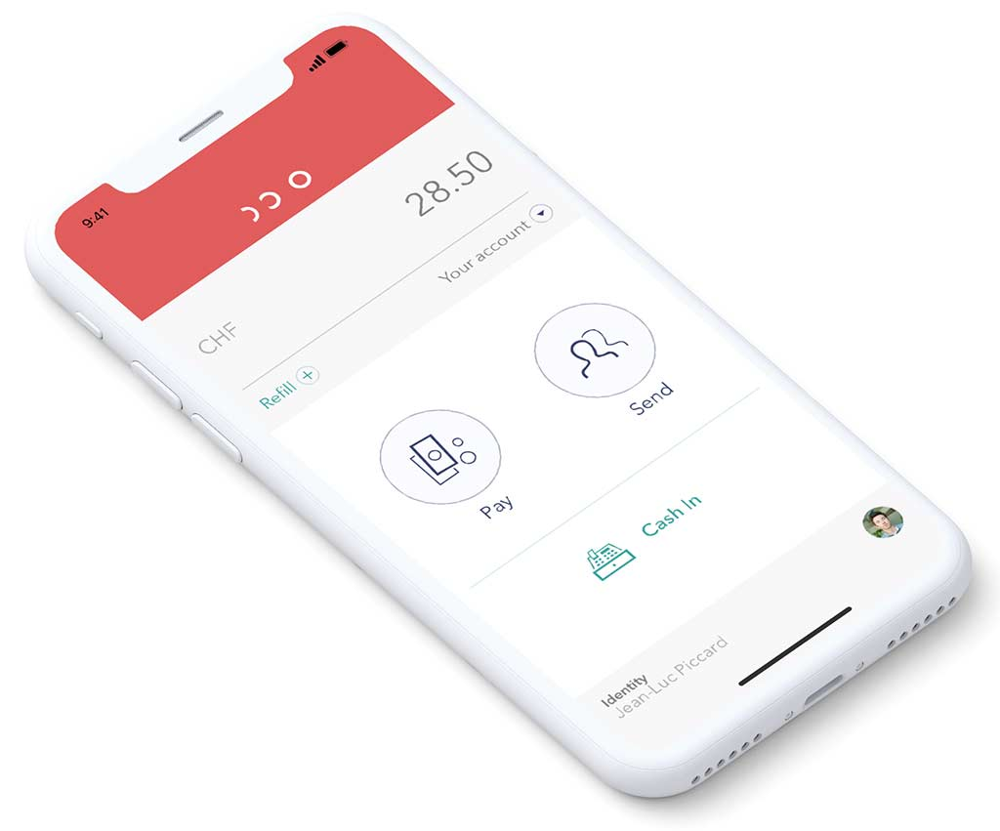
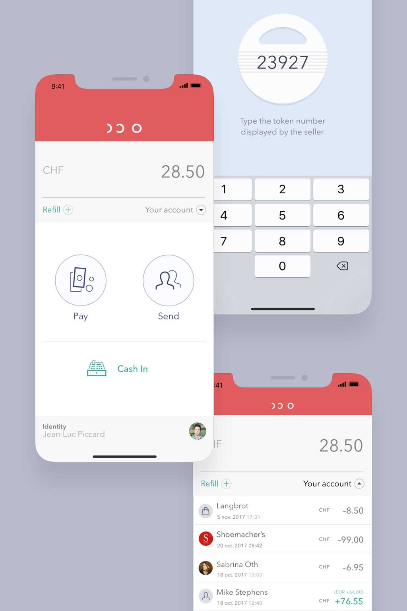
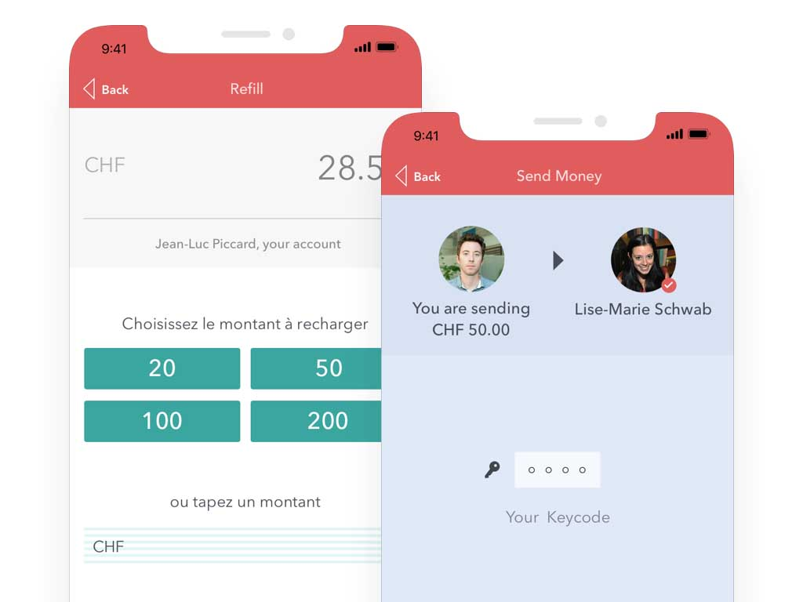
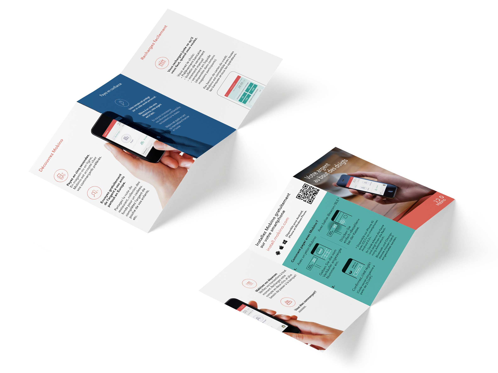
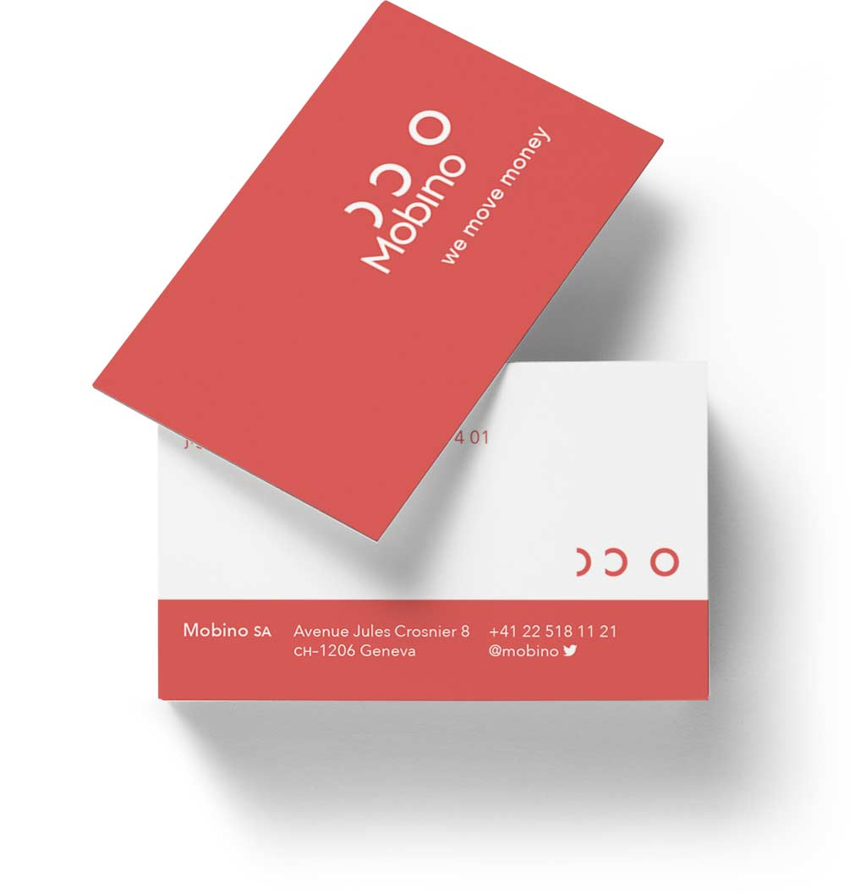
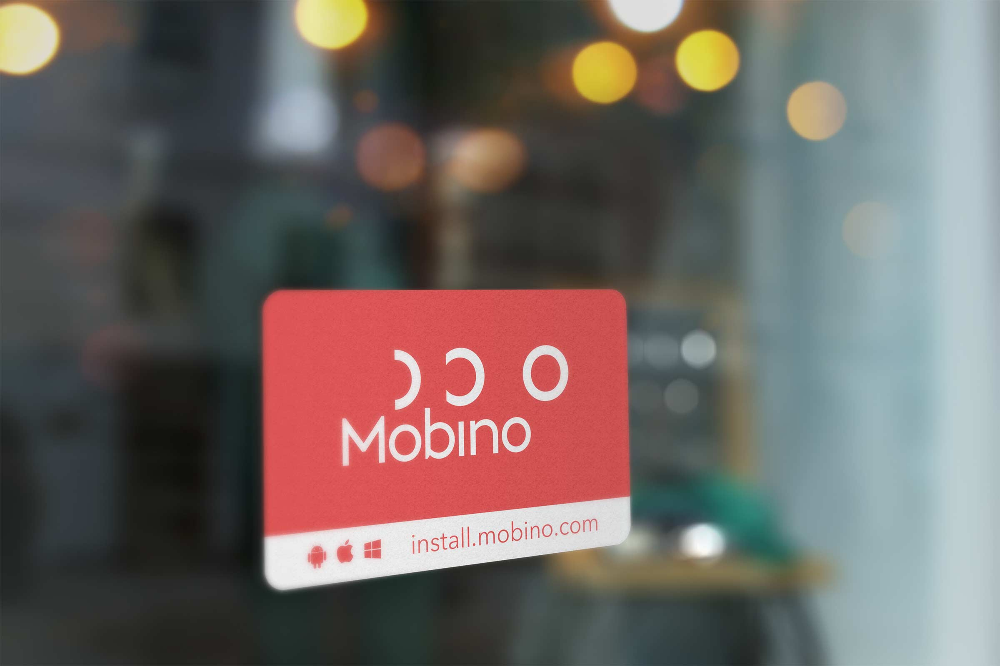

Mobino est un service de payement numérique mobile lancé par le pionnier du web Jean-François Groff.
Ma contribution a touché tous les aspects du service, prototypage et redesign des applis mobiles, définition du message marketing et production de supports de communications, site web et identité visuelle.





